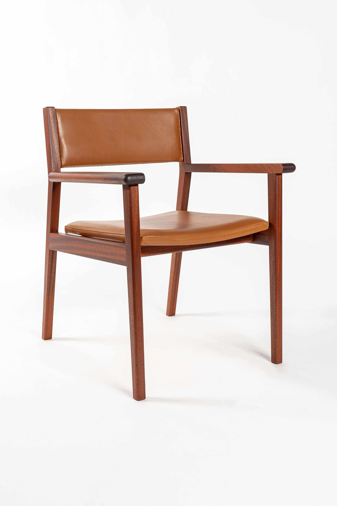
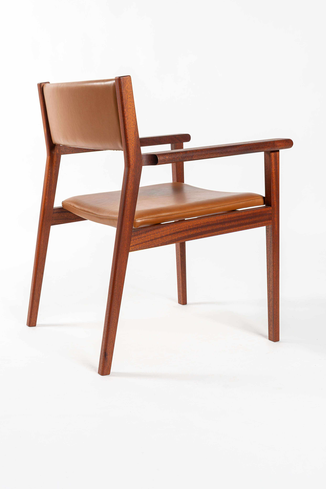
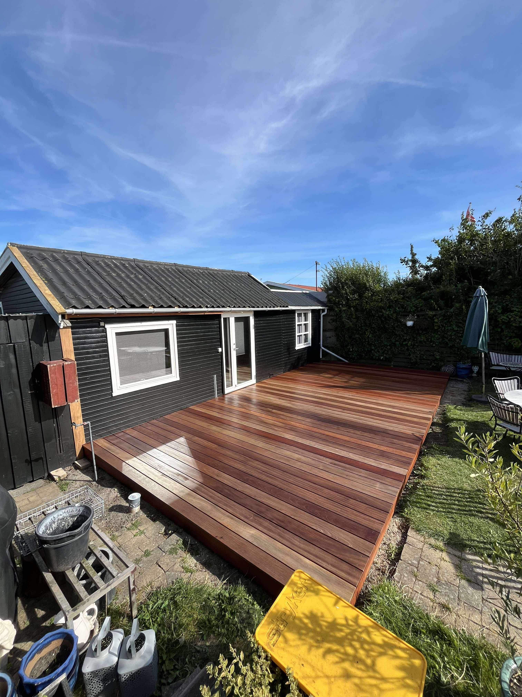
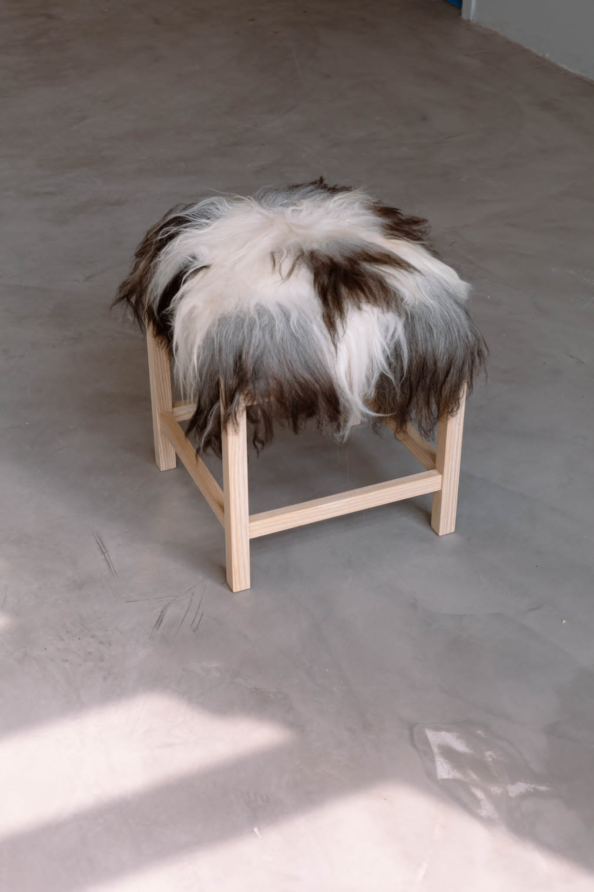
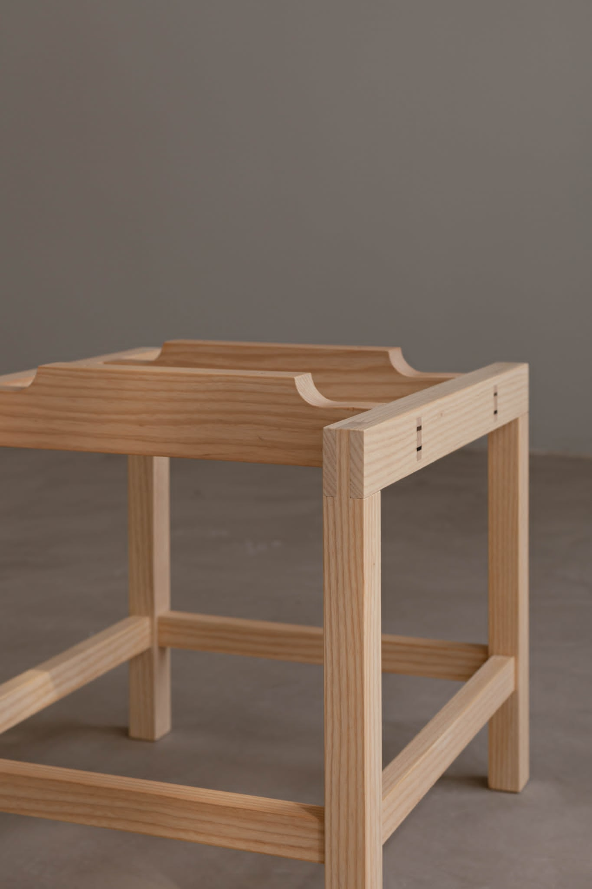
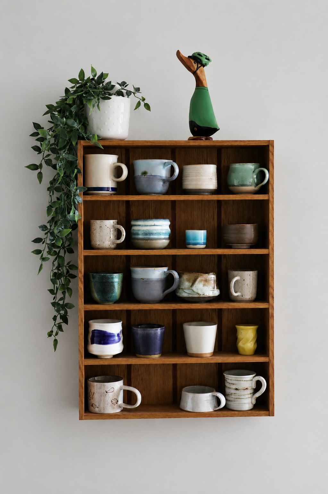

iter.
Fra idé til færdigt håndværk


Start din rejse i træ
Hos Iter bliver der skabt speciallavede møbler og unikke løsninger i træ, hvor kvalitet, design og håndværk går hånd i hånd. Fra idé til færdigt resultat skaber jeg møbler tilpasset dit hjem.
Design dit drømmemøbel trin for trin
Er du i tvivl?
Hvis du ikke helt ved, hvad du leder efter, kan du stadig komme i gang. Book en uforpligtende samtale i min kalender, eller kontakt mig via kontaktformularen, så finder vi den rette løsning sammen.


Møbler og løsninger skabt til dit hjem
Jeg arbejder med både møbelsnedkeri og tømrerarbejde, hvilket gør det muligt at skabe helhedsløsninger - Fra unikke møbler til større konstruktioner i og omkring dit hjem. Hvert projekt starter med en idé og udvikler sig gennem en tæt dialog, hvor materialer, funktion og design bliver tilpasset dig.
it
er.
Møbelsnedkeri

Design dit møbel
Her kan du selv være med til at forme dit møbel. Du vælger træsort, udtryk og funktion, og jeg hjælper med at omsætte dine valg til et færdigt stykke håndværk.
Er du i tvivl?
Hvis du ikke helt ved, hvad du leder efter, kan du stadig komme i gang. Du kan booke en uforpligtende samtale i min kalender eller kontakte mig direkte via kontaktformularen. Her finder vi sammen frem til den rette løsning.
Håndværk med retning
Hos Iter handler det ikke kun om at bygge møbler, men om at skabe en
proces hvor dine idéer bliver til noget fysisk og personligt.
Hvert projekt er en rejse fra tanke til virkelighed hvor design,
materialer og håndværk arbejder sammen for at skabe et færdigt
resultat med kvalitet og funktion i fokus.
Udover speciallavede møbler tilbyder jeg også andre produkter, som
kan købes direkte her på hjemmesiden. Disse produkter er skabt med
samme fokus på kvalitet, materialer og håndværk, men er klar til
brug uden tilpasning.
